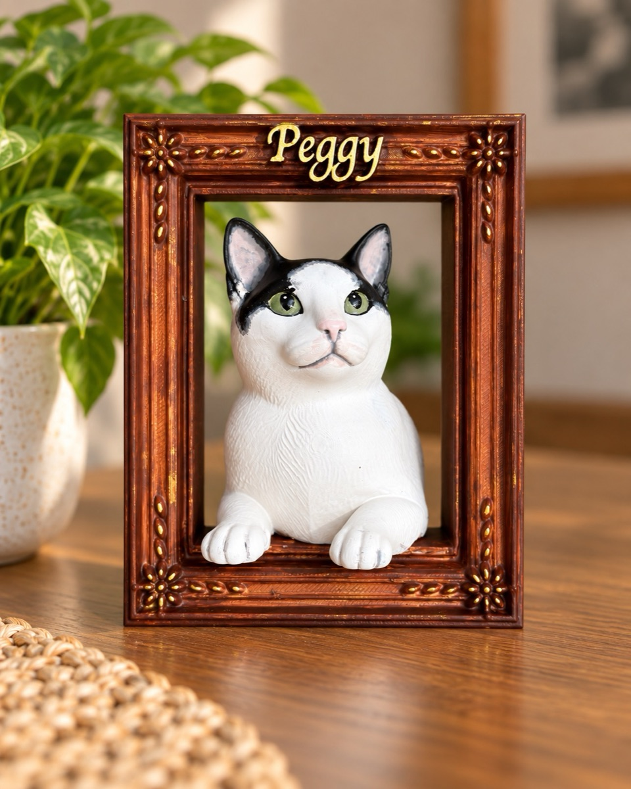
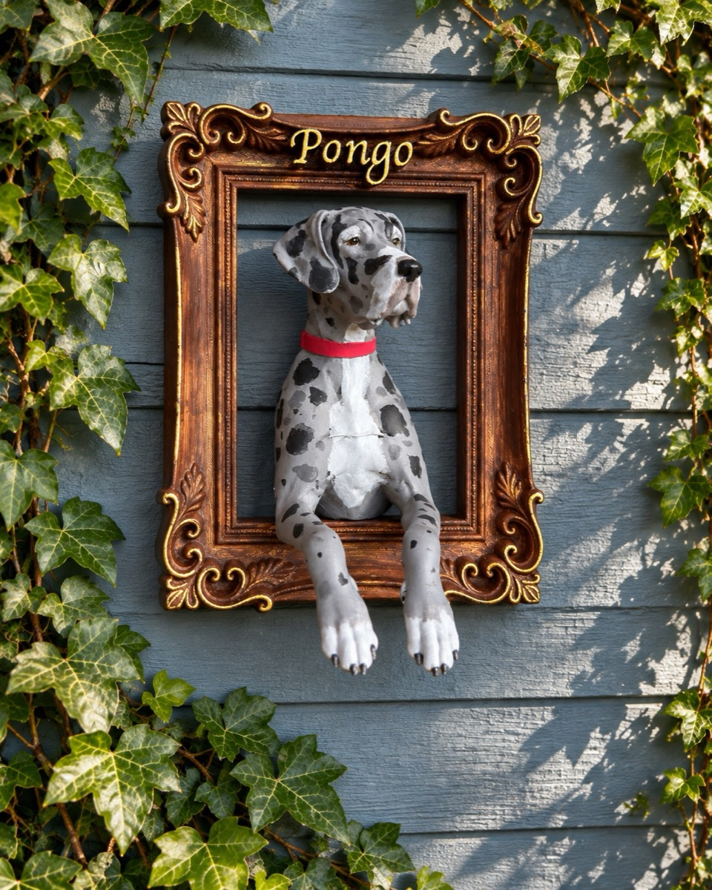
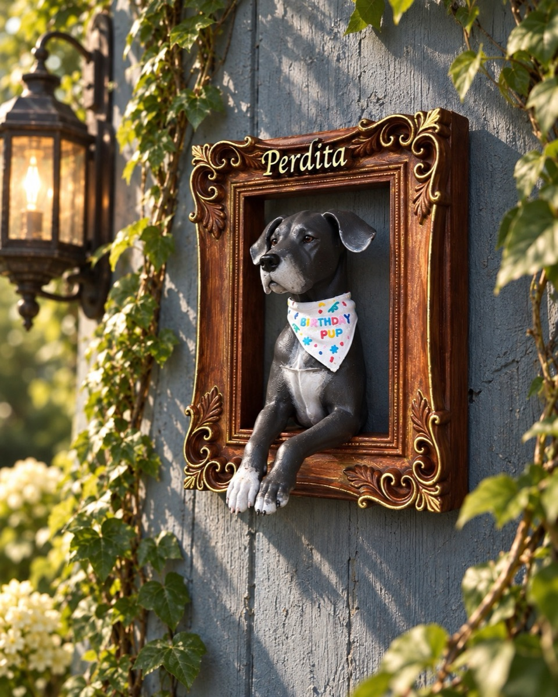
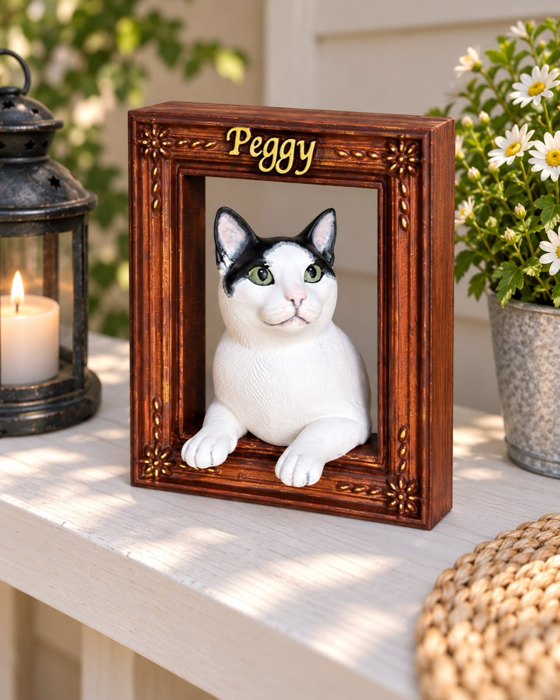
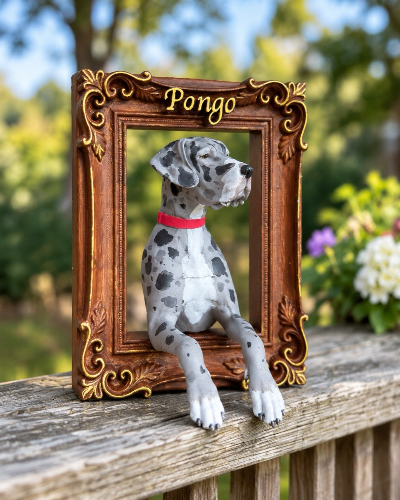
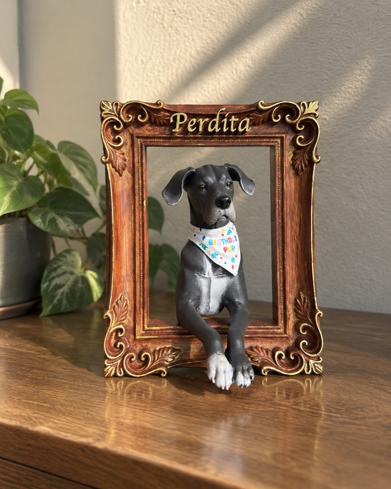

Keep them close,
in their own frame.
A portrait customised to one pet and painted by hand, leaning out of the frame with their name in gold. Made most often for the ones who have gone — and just as gladly for the ones still asleep under the table.
Custom pet portrait frames
Send us photos. We paint them by hand, name and all, leaning out of their own frame.






Customised to your pet
Worked up from photos you send — their markings, their collar, their bandana. It is made for one animal only.
Painted by hand
Every piece is coloured by hand, one at a time. No two come out quite the same.
Their name on the frame
Lettered in gold across the top rail, so nobody has to ask who it is.
Shelf or wall
Three-dimensional, not a print — the paws come out over the front edge. Stands on a mantel or hangs on a wall.
Three we have finished
Peggy the tuxedo cat, and two Great Danes — Perdita and Pongo. All eleven photographs, on a shelf, on a railing and up on a wall, are on the portraits page.
They stay in the room with you.
Most of the portraits we are asked for are of pets who are no longer here.
A photograph keeps them flat, and behind glass. This is different. They lean out into the room, at the height they always were, and the house feels a little less empty for it.
We make them for pets who are still here, too — plenty of people just want their dog on the mantel while the dog is asleep under the table. Either way, they stay where you can see them.
Hello, friends! You’ve stumbled upon the official headquarters of us — Three Fat Babies.
This is where you can dive into our adventures, meet the fur-baby managers who keep our world running smoothly, and see what Mama makes.
Thanks for visiting, and for trusting us with yours. Stay pawsome and come back soon.